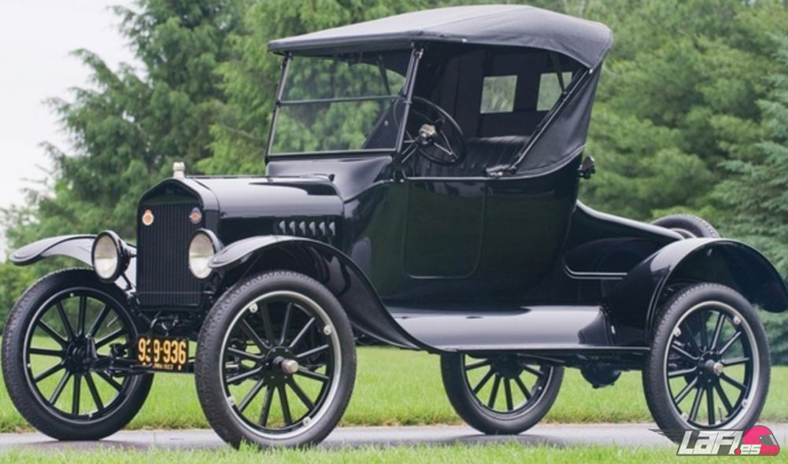

Die ersten Autos
Das erste Auto mit Verbrennungsmotor die Benz Patent-Motorwagen
Das erste Auto mit Verbrennungsmotor wird 1886 in Mannheim Karl Friedrich Benz mit dem Benz Patent-Motorwagen zugeschrieben.5 Bald darauf stellten andere Pioniere wie Gottlieb Daimler und Wilhelm Maybach ihre Modelle vor. Bertha Benz unternahm die erste lange Autofahrt im Jahr 1889, als er von Mannheim nach Pforzheim fuhr, in Städte, die etwa 105 km voneinander entfernt waren Mit einer Höchstgeschwindigkeit von etwa 20 km / h gab er viel mehr Kraftstoff aus, als ein Fahrzeug jetzt bei gleicher Geschwindigkeit ausgibt, und Benzin wurde in Apotheken gekauft, wo es nicht in großen Mengen verfügbar war. Es ist das Auto des erstes Foto.
Ford T
Am 8. Oktober 1904 begann Henry Ford, Autos am Fließband mit dem Ford Model T zu produzieren, was ihm erlaubte, bisher undenkbare Fertigungszahlen zu erreichen. Ford nutzte den Schub der Industriellen Revolution und begann, das Modell T in Serie zu fertigen. Dies war noch nie zuvor gesehen worden, da zuvor alle Autos in Handarbeit hergestellt wurden und ein handwerklicher Prozess viel Zeit in Anspruch nahm. Fords Fließband ermöglichte es ihm, das Modell T fast zwanzig Jahre lang herzustellen, in denen es fünfzehn Millionen Exemplare produzierte.
